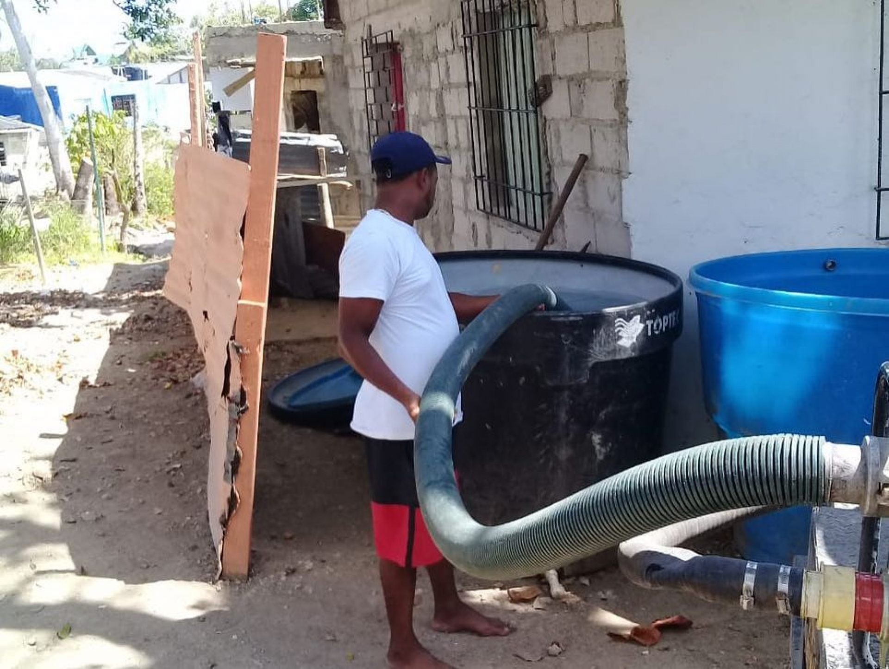
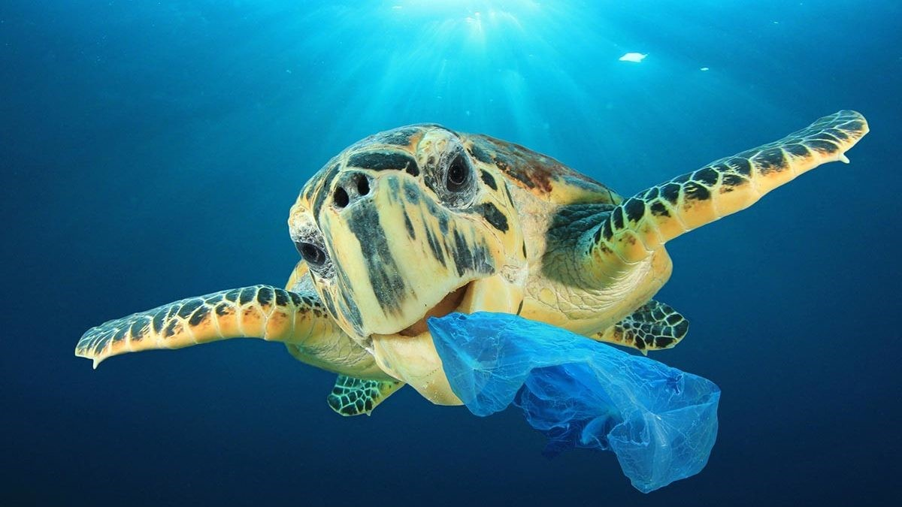

El archipiélago San Andrés afronta una de sus peores crisis por cuenta de la falta de agua. Los isleños, acostumbrados a almacenar el preciado líquido en tanques, vieron en los últimos tres años cómo el agua dejó de caer y sus reservas terminaron. La alerta obligó a la Gobernación a tomar una drástica decisión el viernes 15 de abril: declarar la calamidad pública.
A las largas temporadas de escasez de lluvia se sumó el cambio climático o fenómeno del Niño que azotó el país y que redujo las lluvias. El primero de abril, los pobladores vieron cómo los pozos en los que se abastecían estaban sólo al 20 % de su capacidad.

A la falta de lluvias se suma un problema ante el que muchos se han hecho los de la vista gorda frente a la problemática de la sobrepoblación que afronta la isla y que ha hecho que el preciado líquido disminuya de manera drástica.
Se calcula que allí habitan alrededor de 75.000 personas y cada año llegan un millón de turistas. Una cifra considerable para un territorio de 26 kilómetros cuadrados en donde no hay ríos. “Mientras más personas haya, el consumo de todo, incluido los servicios básicos, se incrementa”, le dijo a Semana.com el gobernador Ronal Housni. [5]
La contaminación de mares y océanos es una realidad creciente en estos tiempos y esto tiene graves consecuencias para la vida marina, como problemas de desorientación, alteraciones en las cadenas alimentarias, toxicidad para la fauna marina, destrucción de los ecosistemas marinos e, incluso, acaba habiendo también consecuencias para el ser humano.
